Flow Matching
from Scratch!
Building a generative model for handwritten MNIST digits from the ground up, starting with a simple one-step denoising UNet before moving to continuous-time flow matching. Along the way, I conditioned the model on time and digit class, then used classifier-free guidance to steer the generation process toward specific digits.
Training a Single-Step Denoising UNet
As a warmup before tackling continuous generative flow fields, I implemented a simple one-step denoiser.
Given a noisy image z = x + σ ε where ε ~ N(0, I), the network Dθ
learns to map z back to the clean image x by optimizing an L2 objective.
Downsampling
A sequence of ConvBlocks and stride-2 DownConvs contracts spatial resolution from 28×28 down to 14×14 and 7×7 while extracting increasingly abstract features.
Flatten & Unflatten
An AvgPool2d(7) flattens 7×7 feature maps to 1×1, followed by a ConvTranspose2d that expands them back to 7×7 for reconstruction.
Skip Concatenation
UpBlocks double spatial dimensions while concatenating corresponding encoder features, providing direct spatial shortcuts to retain clean digit strokes.
1.1 Visualizing the Noising Process
To observe how Gaussian noise distorts digit structures, I applied progressive noise levels
σ = [0.0, 0.2, 0.4, 0.5, 0.6, 0.8, 1.0] to a set of clean test digits. As σ increases,
fine handwriting details quickly dissolve into a diffuse random haze.
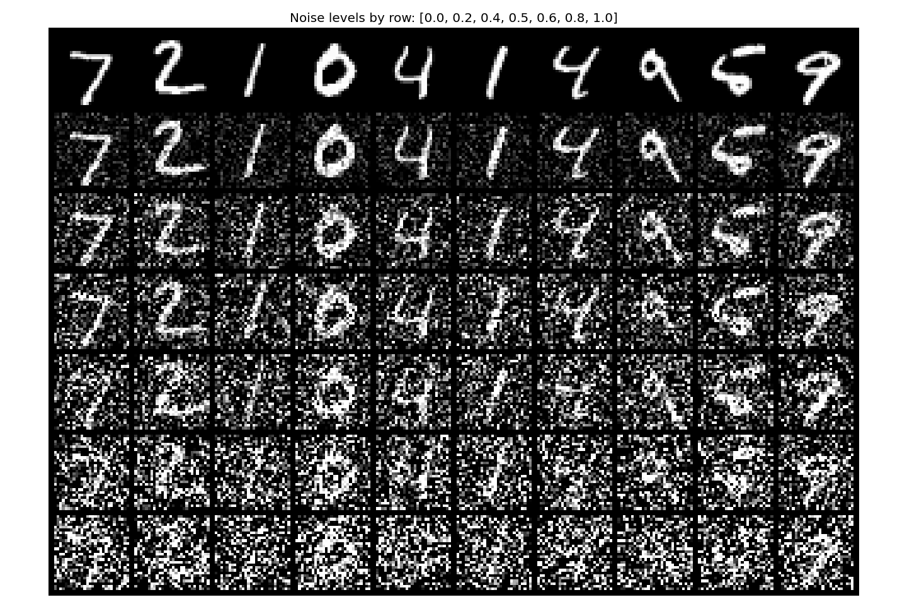
MNIST test digits corrupted by noise levels σ = 0.0, 0.2, 0.4, 0.5, 0.6, 0.8, 1.0 (top to bottom).
1.2.1 Training the Denoiser (σ = 0.5)
I trained the unconditional UNet (hidden channels D = 128) to denoise digits corrupted with σ = 0.5.
Training was run for 5 epochs using the Adam optimizer with a learning rate of 1e-4 and batch size of 256.
Noise was sampled dynamically in every batch so the model constantly encountered fresh noise patterns, improving generalization.
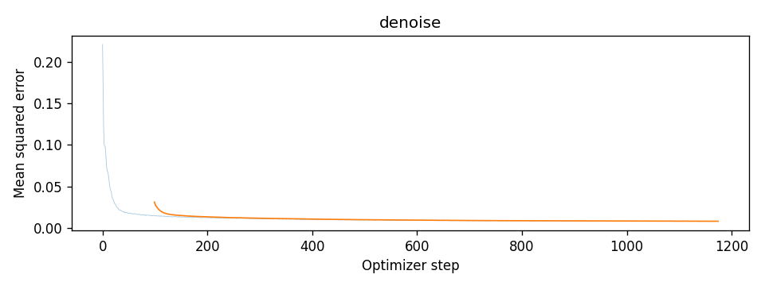
Training loss curve over 5 epochs (~1172 optimizer steps), showing a steep decline from ~0.18 to below 0.01.
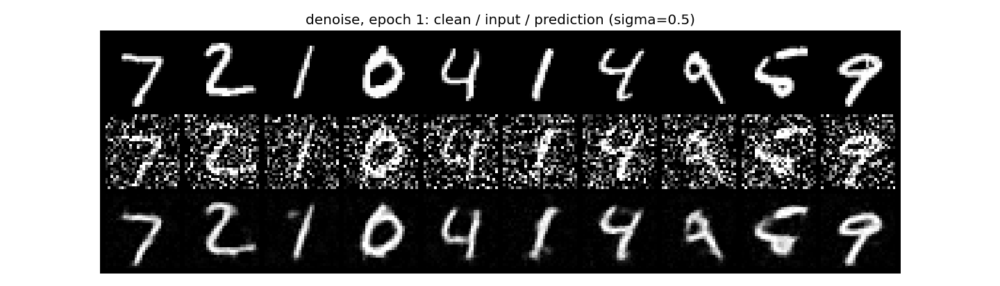
Epoch 1 test predictions (Top: Clean, Mid: Noisy σ=0.5, Bottom: Denoised)
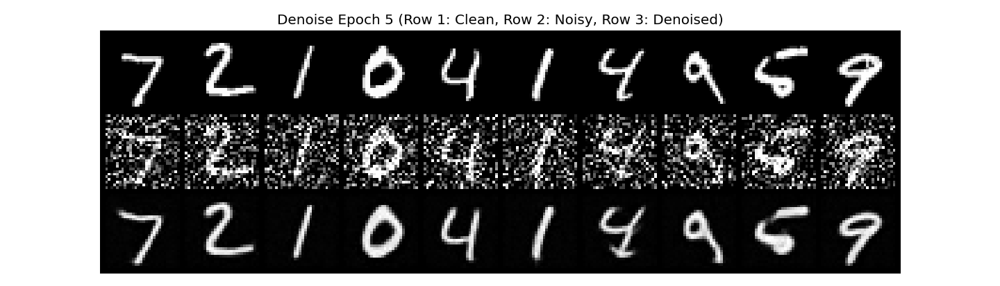
Epoch 5 test predictions: fine contours and stroke connectivity are restored.
1.2.2 Out-of-Distribution Noise Testing
Our denoiser was trained exclusively on σ = 0.5. To see how it behaves when evaluated out-of-distribution,
I evaluated it on test digits corrupted across the entire range σ ∈ [0.0, 0.2, 0.4, 0.5, 0.6, 0.8, 1.0].
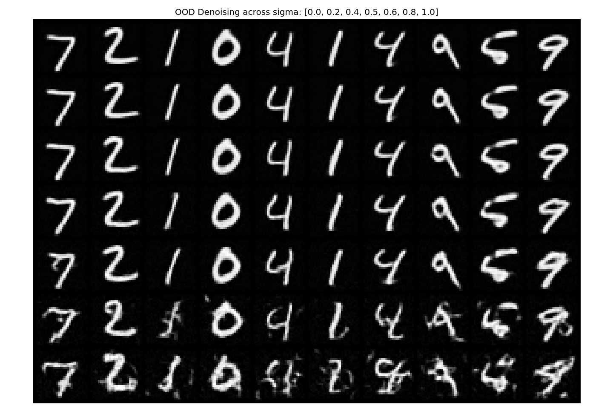
The model generalizes well to lower noise levels and moderately higher ones, producing clean
outputs for σ = 0 to 0.6. Notably, it still performs well at σ = 0 and 0.2, even though it was
never trained on such lightly corrupted inputs. However, artifacts begin to emerge at σ = 0.8,
becoming more pronounced at σ = 1.0, where the model starts inventing strokes. The 2 develops
an extra loop, and 1 and 0 begin to resemble a 6, while 9 starts looking like a 4. Beyond the
noise levels it was trained to handle, the model struggles to recover the original digits.
1.2.3 Denoising Pure Noise
Could we turn this denoiser into a generative model by training it to denoise pure Gaussian noise ε ~ N(0, I) into clean digits?
I trained a fresh UNet under the exact same setup (5 epochs, Adam lr=1e-4, D=128), but fed pure noise with clean digits as targets.
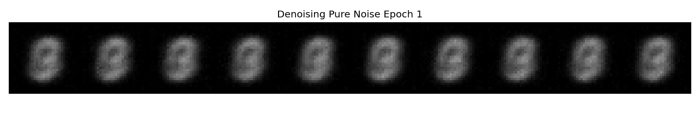
Pure noise input after Epoch 1
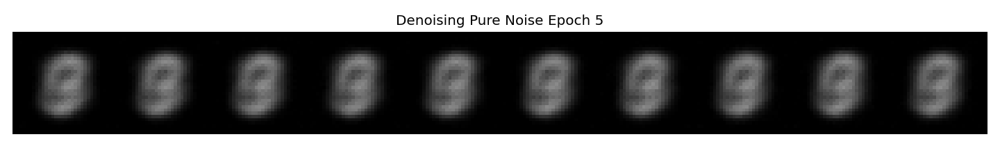
Pure noise input after Epoch 5
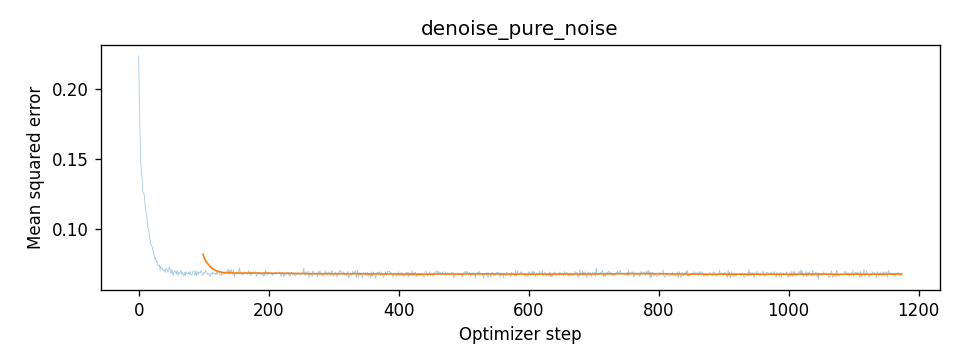
Training loss when denoising pure noise
Observed behaviour
Feeding different Gaussian noise vectors into the trained model yields nearly the exact same picture each time: an indistinct, glowing ring that seems to blend several numerals together rather than forming any recognizable character. The model essentially strips away the specific noise pattern and replaces it with this static shape. Visual variance between test samples is practically nonexistent by the fifth epoch, and the training error quickly flattens out around a steady baseline rather than dropping toward zero. This plateau closely tracks the numerical error one gets simply by comparing every training image to the average pixel values of the entire dataset.
Why this happens
As the input noise is completely random, it gives the network no clue which digit it is supposed to draw. When using an MSE loss under complete uncertainty, the safest mathematical bet is to output the average of all digits. Guessing a specific number like a "7" would cause a huge loss whenever the target happens to be a "0". Instead, outputting the dataset mean minimizes the penalty across all possibilities. This creates a hazy loop that is brightest in the center where most strokes overlap and dark around the edges. It shows that a single denoising step cannot pick a distinct digit from noise, which is why we need Flow Matching to build images gradually over multiple steps.
Training a Flow Matching Model
Since one-step generation fails, we turn to Flow Matching to synthesize images iteratively.
We define a straight-line continuous trajectory connecting pure noise x0 ~ N(0, I) at t = 0
to a clean data sample
x1 ~ pdata at t = 1:
The UNet uθ(xt, t) is trained via standard regression to predict this constant velocity vector field:
FCBlock Conditioning
Timestep t is mapped through a 2-layer MLP (FCBlock) to modulate channel features at the bottleneck and first upsampling block.
Euler Integration
At inference, we start from random noise x0 and numerically integrate along the predicted velocity field:
x ← x + v · Δt.
Optimization Schedule
Base hidden dimension D = 64, initial learning rate 1e-2 decayed exponentially by γ = 0.11/10 per epoch over 10 epochs.
2.1 – 2.2 Time-Conditioned Flow Matching
I trained a time-conditioned UNet (Algorithm B.1) and sampled from it using 50 Euler integration steps (Algorithm B.2) across epochs 1, 5, and 10. Without class guidance, the model learns to turn random noise into diverse, plausible handwritten digits.
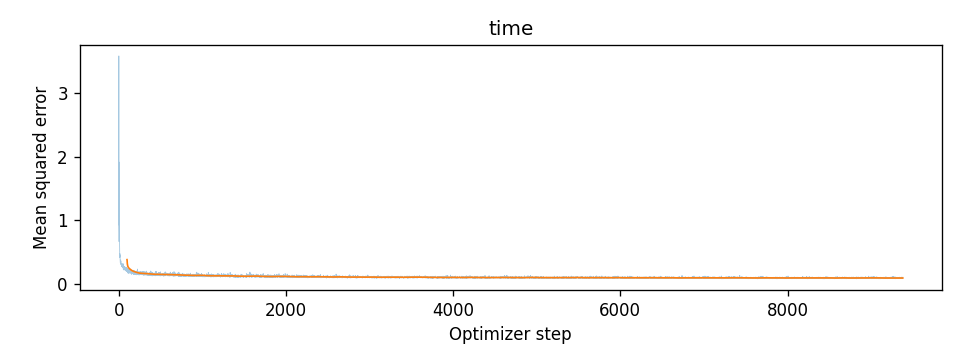
Training loss curve for the time-conditioned UNet across 10 epochs.
Across the final 100 steps of each epoch, the mean training loss steadily declined from 0.133
following the first epoch to 0.093 at epoch 10.
2.3 Sampling from the Time-conditioned UNet
Generated from pure Gaussian noise, each grid tracks 40 samples integrated over Euler steps
from t = 0 to 1. Using a fixed seed and identical initial noise
ensures that the visual progression across checkpoints reflects only the evolution of the
network weights.
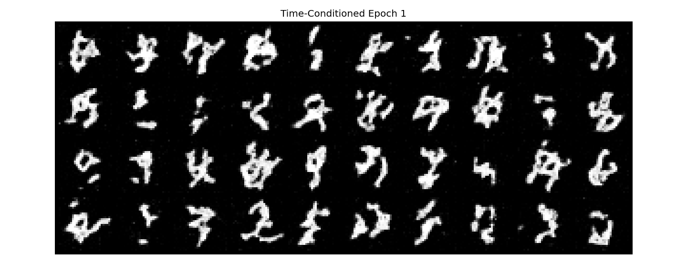
Epoch 1 samples: blurry stroke skeletons emerge from noise.
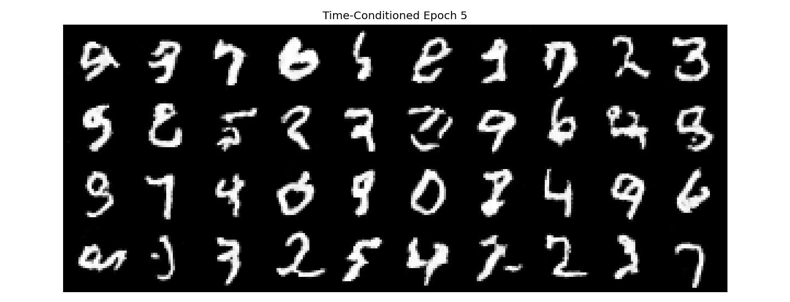
Epoch 5 samples: digit topologies become relatively more well-defined.
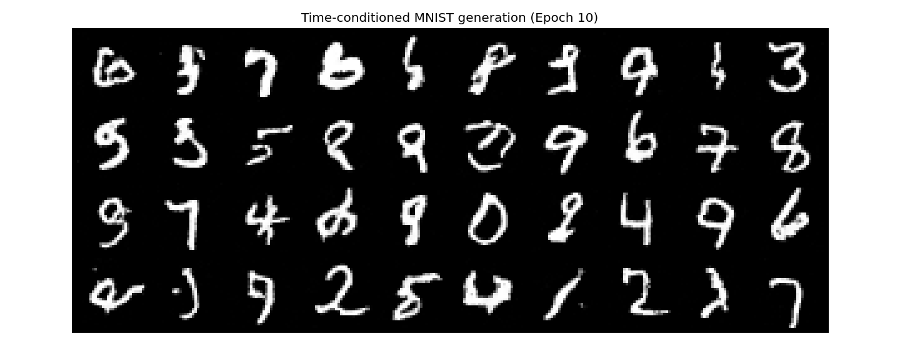
Time-conditioned MNIST generation after 10 epochs (50 Euler steps). Recognizable numerals clearly emerge, though several remain imperfect with broken loops, extraneous tails or ambiguous contours.
2.4 – 2.5 Class-Conditioned UNet & Training Pipeline
While the time-conditioned model synthesizes plausible handwritten strokes, it lacks deterministic control over digit identity. To direct synthesis toward a specific numeral, I conditioned the UNet on the digit class c ∈ {0, …, 9}, represented as a 10-dimensional one-hot vector.
One-Hot Conditioning
The integer label is mapped to a 10-dimensional one-hot vector c and embedded through two independent FCBlock networks to match feature channel dimensions.
Affine Feature Modulation
Conditioning vectors modulate intermediate activations at both the bottleneck and the first upsampling decoder stage via channel-wise scaling and shifting.
Conditioning Dropout
With probability puncond = 0.1, class vectors are dropped to zero during training, enabling the network to learn conditional and unconditional vector fields simultaneously.
Feature Modulation Formulation
Conditioning signals are injected by scaling the convolutional features with class embedding vectors c1, c2 and shifting them with time embeddings t1, t2:
Training followed Algorithm B.3 over 10 epochs using a batch size of 64 and the Adam optimizer with an initial learning rate of 1e-2, decayed per epoch by γ = 0.11/10.
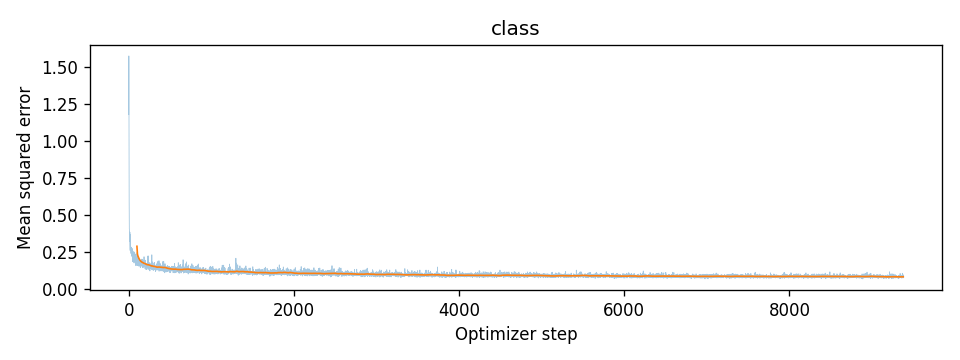
Training loss curve over 10 epochs (~9,375 optimizer steps). Loss drops sharply within the first 200 steps and stabilizes around 0.08.
Training Dynamics & Observations
Integrating class labels altered the optimization landscape noticeably compared to time-only training. Because the network receives explicit categorical information, it no longer has to resolve the ambiguity of multiple digits competing for the same starting noise. The initial loss dropped from ~1.58 down to ~0.15 in under 200 iterations, converging more rapidly to a lower final loss (~0.08) than the unconditional counterpart.
2.6 Sampling with Classifier-Free Guidance & Ablation
To sample from the model, we numerically integrate from pure Gaussian noise at t = 0 to clean images at t = 1 using 300 Euler steps. To amplify the class signal and clean up background haze, we apply Classifier-Free Guidance (CFG) with scale γ = 5.0.
At each step, the UNet computes both the conditioned flow vc and the unconditioned flow vu (evaluated by masking out the class vector). Extrapolating along their difference pushes intermediate latents toward high-density regions of the target class distribution.
Sampling Evolution Across Epochs
Evaluating the model across training checkpoints highlights how quickly class boundaries form under guidance. Four instances were generated for each digit 0 through 9 using fixed random seeds.
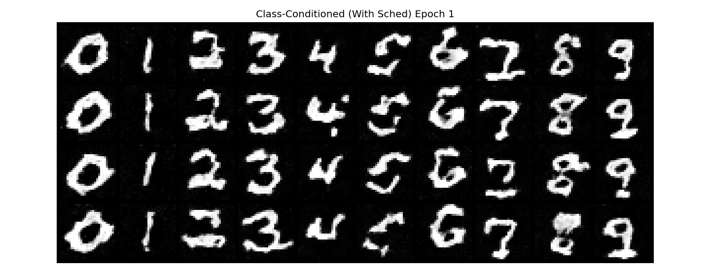
Epoch 1 Checkpoint: Coarse digit topologies are already assigned to their correct columns, though stroke edges remain ragged and noisy.
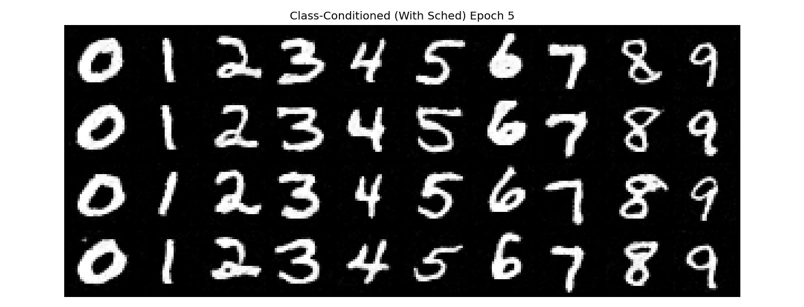
Epoch 5 Checkpoint: Strokes become solid and continuous; background noise is eliminated across all digit categories.
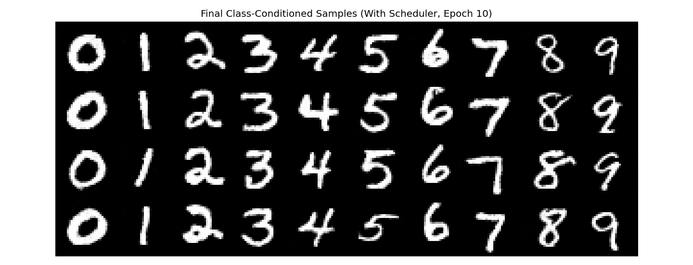
Final Class-Conditioned Generation (Epoch 10, With Scheduler): Exactly four distinct variations per digit (columns 0 through 9). Stroke widths are uniform, curves are smooth and digit identities are unambiguous.
Ablation: Removing the Learning Rate Scheduler
Can we train this model without a decaying learning rate schedule? When keeping the default initial learning rate of 1e-2 constant throughout training, large late-stage gradient updates cause the weights to oscillate around the minimum, degrading stroke smoothness.
To eliminate the scheduler while preserving stability, I trained an independent model using a constant learning rate of 1e-3 with the Adam optimizer over the same 10 epochs.
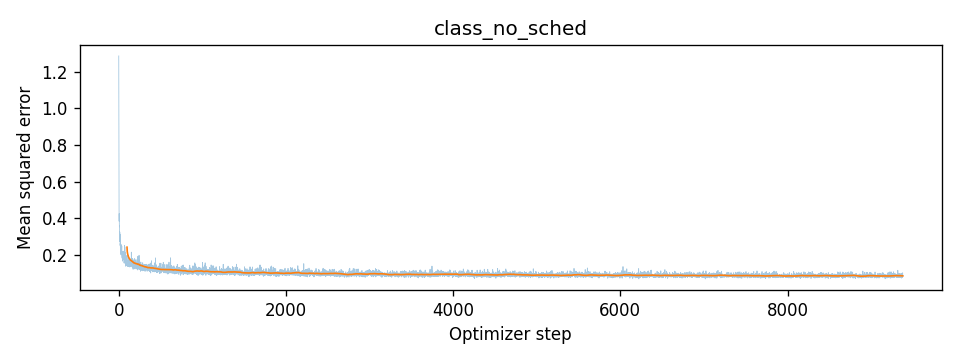
Training loss curve using a constant learning rate of 1e-3. The trajectory descends smoothly without instability, flattening near ~0.09.
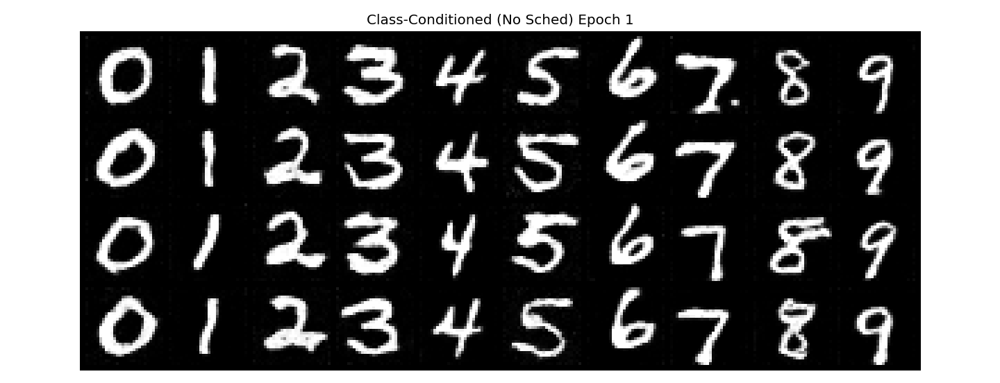
No-Scheduler Epoch 1: Slightly softer stroke edges than the 1e-2 schedule due to conservative early updates.
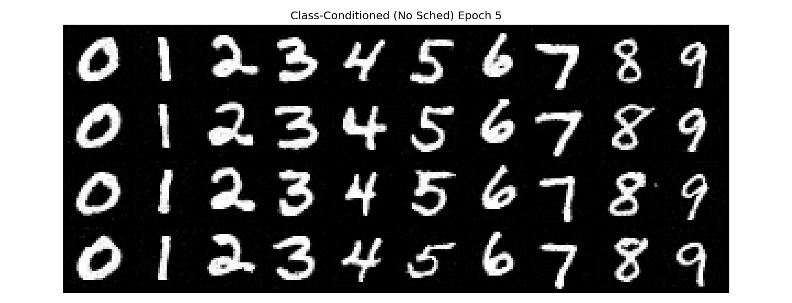
No-Scheduler Epoch 5: Clean, high-fidelity digit outlines emerge across all columns.
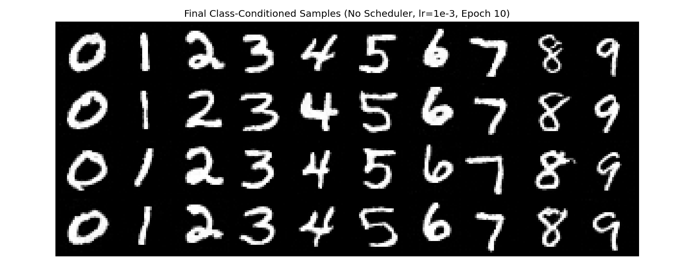
Final Class-Conditioned Generation (No Scheduler, lr = 1e-3): Generated digits show crisp contrast and proper topological separation across all 10 classes, confirming that careful tuning of a constant learning rate can replace decay schedules without sacrificing sample quality.
Comparative Analysis & Takeaways
1. Resolution of Multi-Modal Ambiguity: Unlike the time-only model in Section 2.3, which occasionally produced hybrid digits (e.g., an ambiguous cross between a 3 and a 5), the class-conditioned network exhibits zero class confusion. Every single generated sample strictly adheres to its target column identity.
2. The Impact of Guidance Scale (γ = 5.0): Classifier-Free Guidance acts as an edge-sharpening contrast operator in vector space. Because the vector difference (vc - vu) points directly away from unconditioned average strokes toward high-probability class modes, scaling it by 5.0 suppresses off-stroke haze and tightens stroke thickness.
3. Optimizer Dynamics (Constant vs. Decaying LR): The decaying schedule (1e-2 → 1e-3) converges slightly faster in the first two epochs because large early steps quickly orient the global flow field. However, adopting a uniform 1e-3 rate achieves identical final perceptual quality by epoch 10, removing scheduler complexity with negligible computational trade-off.